Ebiya Aidu
Ebiya AiduIkuspegi orokorra
Biriketako minbizia berandu diagnostikatu ohi da, eta hori da biziraupena hain txikia izatearen arrazoietako bat. Proiektu honek TCGA Pan-Cancer Atlas-eko biriketako adenokartzinoma duten 566 pazienteren mutazio-paisaia aztertzen du, diagnostikoan eta tratamenduan lagun lezaketen geneak eta bideak bilatzeko.
Proiektu deskribatzailea da: mutazioak non dauden erakusten du, baina ez du frogatzen horietatik zeinek eragiten duten ezer edo aurreikusten duten.
Datuak
Datuak publikoak dira. Mutazio- eta datu kliniko-fitxategiak cBioPortal-eko TCGA Pan-Cancer Atlas 2018 biriketako adenokartzinoma azterketatik datoz (luad_tcga_pan_can_atlas_2018): 566 paziente, mutazio somatikoekin eta datu klinikoekin. Biziraupenaren analisiak bere datu klinikoak Genomic Data Commons-etik jaisten ditu TCGAbiolinks-ekin (TCGA-LUAD proiektua).
Datu publikoak
Txosten osoa
Unibertsitateko jatorrizko txostena. Xehetasun batzuk aldatu dira, azken bertsioa ez dudalako aurkitu. “2026an osatua” markatutako blokeak geroago idatzi dira Clauderekin, eta ez dira jatorrizkoaren parte. Datu pertsonalak eta fitxategi-bideak kendu dira. Txostena ingelesez dago.
1. Introduction
Lung cancer is the most common cause of cancer death in men (and second in women) with 1.8 million deaths worldwide [1]. In the US, survival rates after 5 years are around 20%. It is also commonly referred to as bronchial carcinoma since 99% of cases consist of this variety. Smoking (as well as passive smoking) is by far the largest predisposing risk factor for this cancer, contributing to 90% and 70% of the deaths in men and women respectively [2]. Vaping may also contribute, through there remains a lack of robust evidence at this time. Other dangerous inhalants include air pollutants, asbestos from home insulation, and radon gas which may accumulate in homes.
Around 8% of cases are hereditary, mainly caused by specific single nucleotide polymorphisms at CHRNA3, CHRNA4 and CHRNA5 which modulate acetylcholine receptors. Recent evidence suggest that changes to the epigenome caused by DNA methylation and histone modification may result in suppression in tumour suppressor genes that worsen pathogenesis [3].
One of the main factors which contribute to this poor prognosis is that the disease is usually at an advanced stage by the time the diagnosis is made. Screening tools are expensive, involve risky ionising radiation using a CT scan and results in a high rate of false positive tests. The aim of this project is to parse out trends in genomic and epigenetic data that may aid in lung cancer diagnosis.
2. Materials and Methods
We selecting the TCGA-PanCancerAtlas dataset on lung adenocarcinoma from cBioPortal.com and downloaded it onto our computer. We then read the text file using read_delim function. The clinical dataset had been split into was split into sample and patient data and we used the merge command to join them. We added this dataset to the mutations data imported using the read.maf fuction contained in the maftools package, and saved as the variable luad.
Kodea erakutsi
library(readr)
data_clinical_sample <- read_delim("path/to/luad_tcga_pan_can_atlas_2018/data_clinical_sample.txt",
"\t", escape_double = FALSE, trim_ws = TRUE,
skip = 4)
library(readr)
data_clinical_patient <- read_delim("path/to/luad_tcga_pan_can_atlas_2018/data_clinical_patient.txt",
"\t", escape_double = FALSE, trim_ws = TRUE,
skip = 4)
data_clinical_all <- merge(data_clinical_sample, data_clinical_patient, by="PATIENT_ID")
colnames(data_clinical_all)[2]<-"Tumor_Sample_Barcode"
library(maftools)
luad <- read.maf("path/to/luad_tcga_pan_can_atlas_2018/data_mutations_extended.txt",
clinicalData = data_clinical_all)
#Filter
luad<-filterMaf(maf=luad,genes=c("MUC16","TTN"))
#luad<-filterMaf(maf=luad,genes=c("FLG","CSMD3","SPTA1"))The resulting data loaded into R contains 566 patients each with a total number of 54 clinical parameters. We filtered out mutation data for genes that do not directly drive cancer initiation and progression, such as TTN and MUC16 (passenger genes).
To get an overview of the genes that were mutated in which patients, we created a matrix with rows containing mutated genes and columns containing patients studied. This allowed us to search our data for specific mutations as well as specific patients. We also were interested in knowing the most mutated gene across all patients so we summed the data from each patient. We found that CSMD3 had the greatest number of mutations.
2.1. Summary
To get a visual representation of the previous matrix, we used the plot mafsumary function to view the different types of mutations that our data contains.
Kodea erakutsi
plotmafSummary(maf = luad, rmOutlier = TRUE, addStat = 'median', dashboard = TRUE)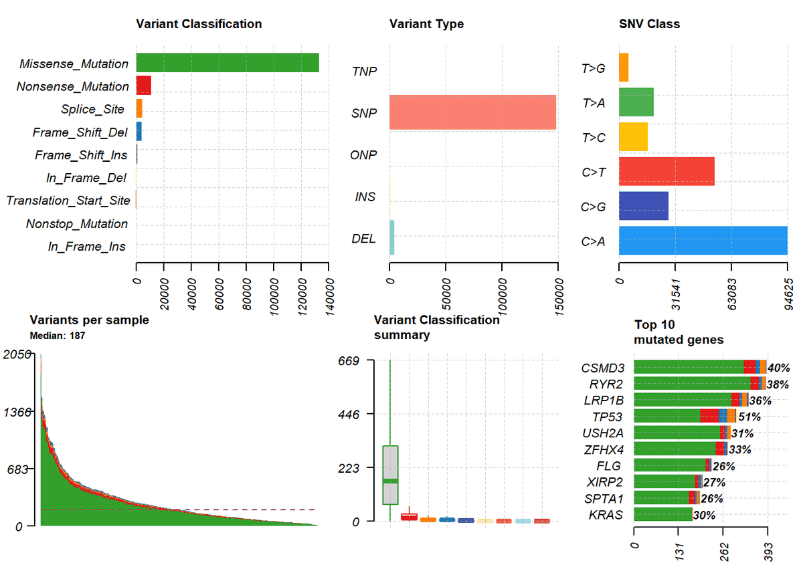
We can see from our data that the vast majority of mutations are single nucleotide polimorfisms which are common alterations at a genomic locus across the population. Almost all of this are missense mutations, where a single nucleotide is swapped for another resulting in a change in the transcribed mRNA that codes for a new aminoacid. The most common nucleotide substitutions are cytosine to adenine aswell as cytosine to timine.
Each sample has a median value of 187 mutations and most of these are in CSMD3, RYR2, LRP1B and TP53.
We also have a few mutations of the Frameshift type, which are much more inpactful since it results in the alteration of all of the codons that follow it. Of particular interest is TP53 which has the greatest number of this type of mutation as well as a large number of missense ones. As a result a great deal of our following analyses will study this important gene.
2.2. Genomic Loci of Mutations
Using a rainfall plot we can study the location in the genome where mutations predominate.
Kodea erakutsi
rainfallPlot(maf = luad, detectChangePoints = TRUE, pointSize = 0.6)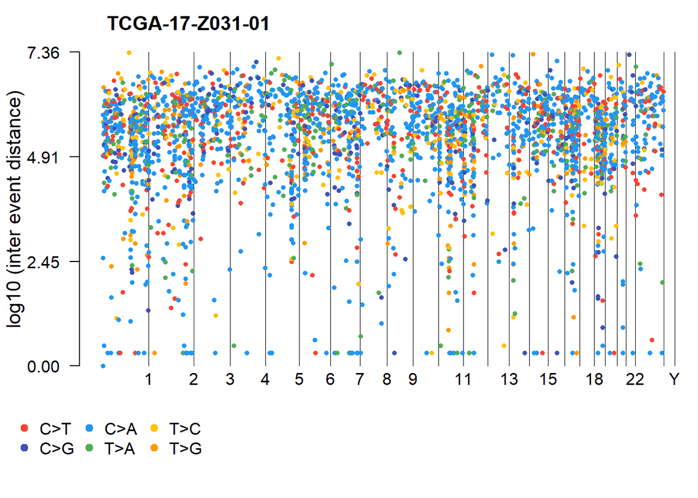
We can see that earlier chromosomes (1-5) contain a greater number of mutations than do later chromosomes. The first X chromosome also contains a large number of mutations.
2.3. Transitions or Transversions?
Kodea erakutsi
#Transition and Transversions
luad.titv = titv(maf = luad, plot = FALSE, useSyn = TRUE)
#plot titv summary
plotTiTv(res = luad.titv)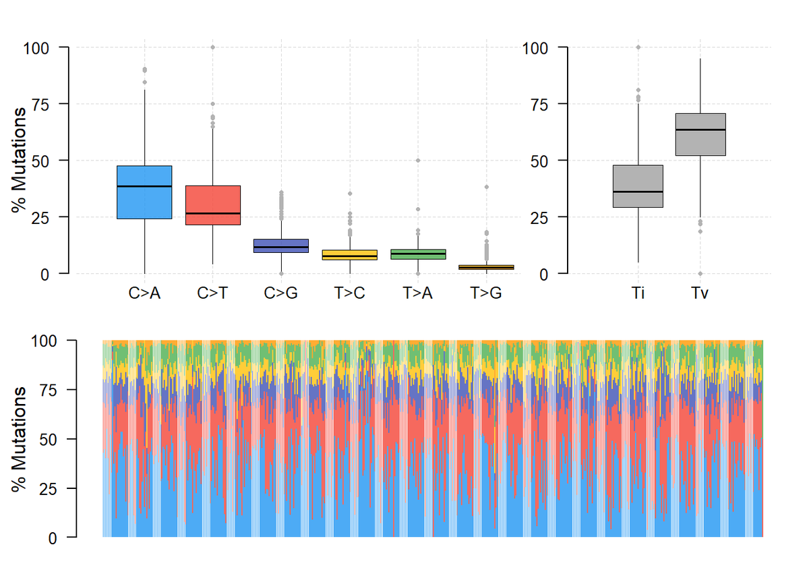
There is a greater number of transversions (where one-ring pyramidines are interchanged) than transitions (where two-ring purines are interchanged). This is striking since transition mutations usually occur at a greater rate than transversions [7]. This may be expected since transversions are more likely to result in amino acid substitutions that may result in tumour propagation.
The greatest proportion of mutations occurred from cytosine to adenine and insterestingly there was a large trend towards loss of cytosine nucleotides, since the top three mutation types all described changes away from cytosine.
2.4. Mutation Frequency by Sample
We performed an Oncoplot to investigate the frequency of the most common mutated genes in our sampleset.
Kodea erakutsi
oncoplot(maf = luad, top = 10)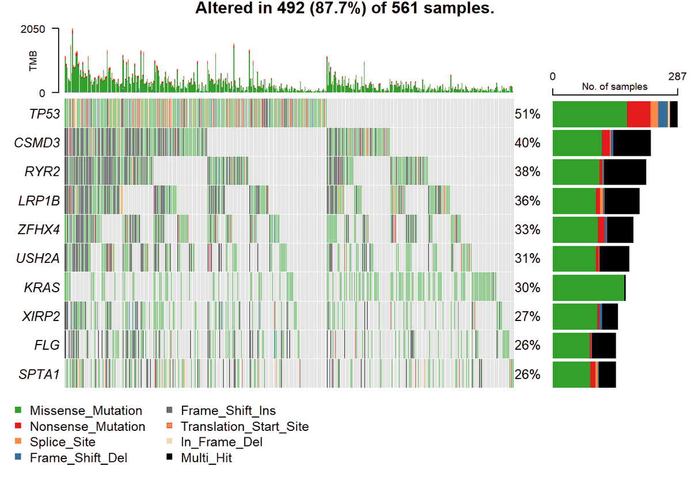
The most commonly mutated gene was TP53, appearing in 287 out of 566 tested samples (51%). TP53 (often called “guardian of the genome”) controls the production of 12 isoforms of the protein p53 (53kD), which are produced through alternative translation, promoters or splicing [4]. This gene is activated when normal cell homeostasis is disturbed and modulates the growth phase of the cell cycle to suppress tumour growth. The protein p53 is a transcription factor that directly regulates the activity of more than 3600 genes and prevents damaged cells from proliferating. If p53 levels are too low, tumour growth can occur but too much can also damage the cell. Therefore, maintaining adequate balance is of utmost importance. Since many tumour types have mutated TP53 genes, we cannot use it as a specific diagnostic tool, yet it remains a promising avenue for treatment.
Subsequent genes on the list had large numbers of multi-hit mutations, suggesting that many genes need to be controlled at the same time (perhaps through a cellular pathway) in order to prevent tumour propagation [5]. We will study this link later on in this report.
2.5. Allele Uniformity
Variant allele frequency (VAF) describes how common a particular mutated allele is compared to all alleles of a gene in a given population. The higher the VAF value, the more likely that this variant is a true positive in terms of driving pathogenesis [6].
Kodea erakutsi
#VAF
layout(1)
plotVaf(maf = luad)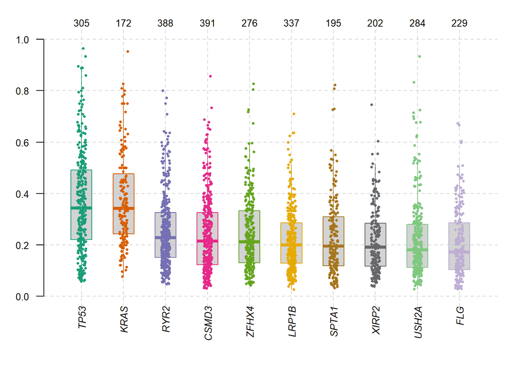
As we can see, the TP53 mutation is fairly uniform across our population, suggesting that a drug could be developed that works for a large section of the population. The KRAS gene is also another potential unique target due to the low number of multi-hit mutations (as can be seen in the oncoplot)
2.6. Proteomic Loci of Mutation
We decided to perform a lollipop plot of the TP53 gene to find where in the sequence the greatest number of mutations were detected. We found that the alterations in primary structure in the resulting p53 protein was found in the DNA binding domain (102-292) and tetramerization (4-unit) domain. In particular we found the greatest density of changes at the ends of the DNA binding domain which binds to complementary DNA in the genome altering their gene expression.
Kodea erakutsi
lollipopPlot(maf = luad, gene = 'TP53', showMutationRate = TRUE)## HGNC refseq.ID protein.ID aa.length
## 1: TP53 NM_000546 NP_000537 393
## 2: TP53 NM_001126112 NP_001119584 393
## 3: TP53 NM_001126118 NP_001119590 354
## 4: TP53 NM_001126115 NP_001119587 261
## 5: TP53 NM_001126113 NP_001119585 346
## 6: TP53 NM_001126117 NP_001119589 214
## 7: TP53 NM_001126114 NP_001119586 341
## 8: TP53 NM_001126116 NP_001119588 209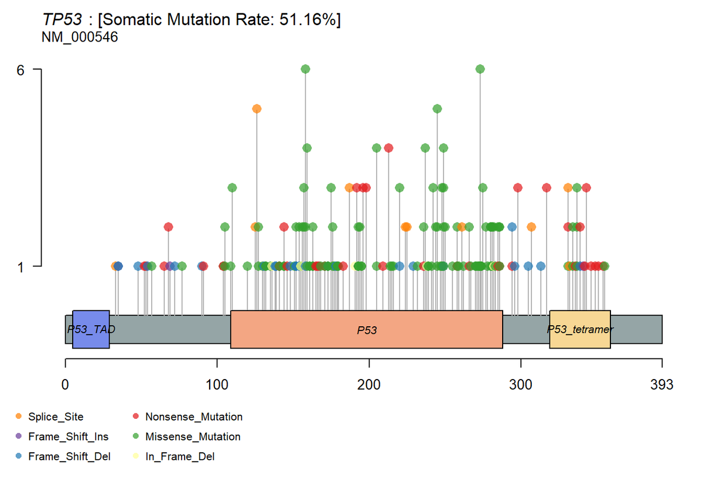
We also performed a lollipop plot for KRAS.
Kodea erakutsi
lollipopPlot(maf = luad, gene = 'KRAS', showMutationRate = TRUE)## HGNC refseq.ID protein.ID aa.length
## 1: KRAS NM_004985 NP_004976 188
## 2: KRAS NM_033360 NP_203524 189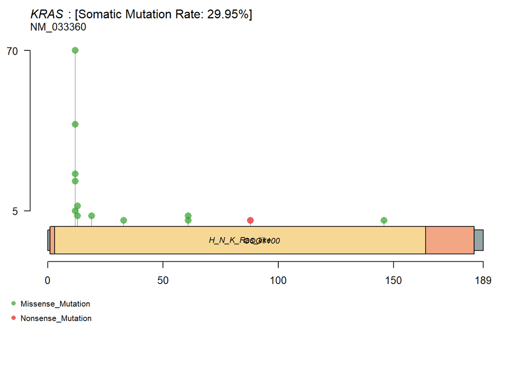
3. Analysis of Results
3.1. Mutations and Cancer Type
We were interested in seeing how Lung Adenocarcinoma compares to other cancer types in terms of number of mutations per patient.
Kodea erakutsi
laml.mutload = tcgaCompare(maf = luad, cohortName = 'Example-LUAD')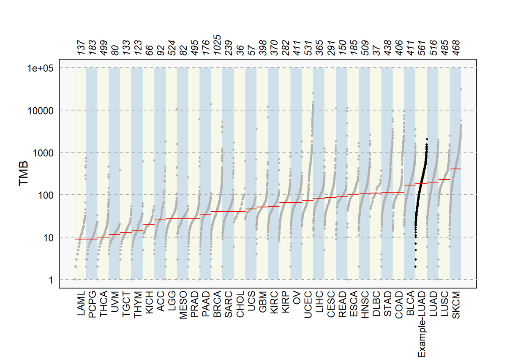
We can see that this particular cancer has a great deal of mutations which gives us a large number of drug targets in the search for an effective treatment. It was only beaten by skin cutaneous melanoma and lung squamous cell carcinoma (a more serious type of lung cancer)
3.2. Tumour Grade and Survival
We were also interested in seeing the effect of tumour grade on survival statistics. We performed a survival analysis and plotted Kaplan-Meier curves to find out.
Kodea erakutsi
#Survival
# Load packages
library("TCGAbiolinks")
library("survival")
library("survminer")
#Query
query_TCGA = GDCquery(
project = "TCGA-LUAD",
data.category = "Transcriptome Profiling",
experimental.strategy = "RNA-Seq",
workflow.type = "HTSeq - Counts",
sample.type = c("Primary Tumor", "Solid Tissue Normal"))
##Next, we need to download the files from the query
GDCdownload(query = query_TCGA)
tcga_data = GDCprepare(query_TCGA)We want to see what our data contains (it looks interesting to compare the tissue of origin, gender and race)
Kodea erakutsi
dim(tcga_data)## [1] 56602 592Kodea erakutsi
table(tcga_data@colData$vital_status)##
## Alive Dead
## 374 218Kodea erakutsi
table(tcga_data@colData$definition)##
## Primary solid Tumor Solid Tissue Normal
## 533 59Kodea erakutsi
table(tcga_data@colData$tissue_or_organ_of_origin)##
## Lower lobe, lung Lung, NOS
## 194 15
## Main bronchus Middle lobe, lung
## 2 24
## Overlapping lesion of lung Upper lobe, lung
## 4 353Kodea erakutsi
table(tcga_data@colData$gender)##
## female male
## 320 272Kodea erakutsi
table(tcga_data@colData$race)##
## american indian or alaska native asian
## 1 7
## black or african american not reported
## 58 66
## white
## 460Kodea erakutsi
#---------Survival analysis---------------------------
# extract clinical data
clinical = tcga_data@colData
#TISSUE OF ORIGIN
#We will select only the lower lobe and upper lobe as these are the sites where we have the most data
clin_df = clinical[clinical$tissue_or_organ_of_origin == c("Lower lobe, lung" , "Upper lobe, lung"),
c("patient",
"vital_status", #whether the patient is alive or dead
"days_to_death", #the number of days passed from initial diagnosis to the death
"days_to_last_follow_up", #the number of days passed from initial diagnosis to last visit
"tissue_or_organ_of_origin")]
# create a new boolean variable that has TRUE for dead patients
# and FALSE for live patients
clin_df$deceased = clin_df$vital_status == "Dead"
# create an "overall survival" variable that is equal to days_to_death
# for dead patients, and to days_to_last_follow_up for patients who
# are still alive
clin_df$overall_survival = ifelse(clin_df$deceased,
clin_df$days_to_death,
clin_df$days_to_last_follow_up)
#Let's see if different origins have had different prognosis
# fit a survival model
fit = survfit(Surv(overall_survival, deceased) ~ tissue_or_organ_of_origin, data=clin_df)
print(fit)## Call: survfit(formula = Surv(overall_survival, deceased) ~ tissue_or_organ_of_origin,
## data = clin_df)
##
## 3 observations deleted due to missingness
## n events median 0.95LCL 0.95UCL
## tissue_or_organ_of_origin=Lower lobe, lung 98 40 1501 995 2620
## tissue_or_organ_of_origin=Upper lobe, lung 177 60 1622 1209 NAKodea erakutsi
clin_df1 = clinical[clinical$gender == c("female" , "male"),
c("patient",
"vital_status",
"days_to_death",
"days_to_last_follow_up",
"gender")]
clin_df1$deceased = clin_df1$vital_status == "Dead"
clin_df1$overall_survival = ifelse(clin_df1$deceased,
clin_df1$days_to_death,
clin_df1$days_to_last_follow_up)
fit1 = survfit(Surv(overall_survival, deceased) ~ gender, data=clin_df1)
print(fit1)## Call: survfit(formula = Surv(overall_survival, deceased) ~ gender,
## data = clin_df1)
##
## 7 observations deleted due to missingness
## n events median 0.95LCL 0.95UCL
## gender=female 164 58 1498 1379 2174
## gender=male 143 56 1622 1258 2393Kodea erakutsi
# we produce a Kaplan Meier plot
splots <- list()
splots[[1]] <- ggsurvplot(fit, data=clin_df, pval = T)
splots[[2]] <- ggsurvplot(fit1, data=clin_df1, pval = T)
# Arrange multiple ggsurvplots and print the output
arrange_ggsurvplots(splots, print = TRUE,
ncol = 2, nrow = 1, risk.table.height = 0.4)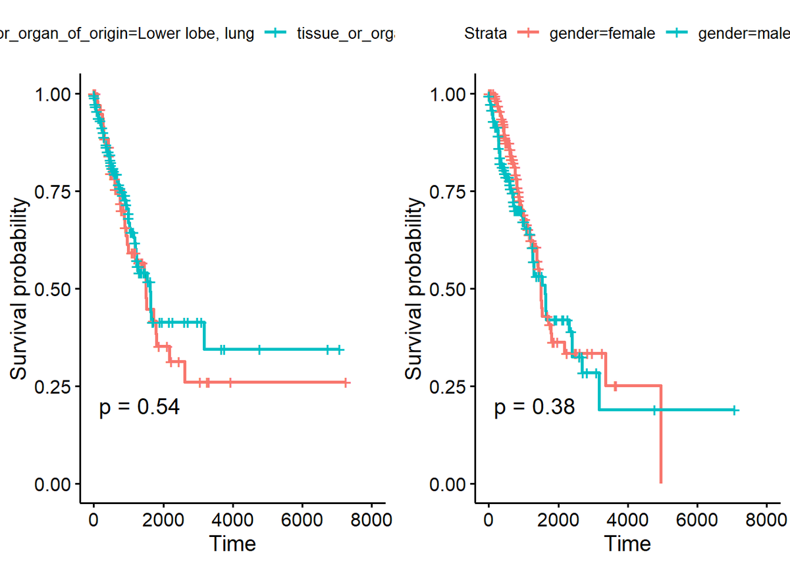
Kodea erakutsi
#all TP53 mutant patients
subsetMaf(maf = luad, genes = "TP53")## -Processing clinical data## An object of class MAF
## ID summary Mean Median
## 1: NCBI_Build GRCh37 NA NA
## 2: Center . NA NA
## 3: Samples 287 NA NA
## 4: nGenes 1 NA NA
## 5: Frame_Shift_Del 24 0.084 0
## 6: Frame_Shift_Ins 3 0.010 0
## 7: In_Frame_Del 5 0.017 0
## 8: Missense_Mutation 195 0.679 1
## 9: Nonsense_Mutation 55 0.192 0
## 10: Splice_Site 23 0.080 0
## 11: total 305 1.063 1As expected, the greater the tumour grade at time of first diagnosis, the shorter survival time on average. Some curves were very jagged due to the small subset of patients possessing this cancer grade.
3.3. Gene Interactions
Kodea erakutsi
#exclusive/co-occurance event analysis on top 10 mutated genes.
somaticInteractions(maf = luad, top = 25, pvalue = c(0.05, 0.1))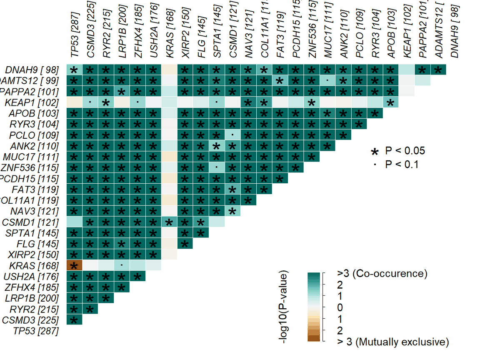
## gene1 gene2 pValue oddsRatio 00 11 01 10 Event
## 1: USH2A CSMD3 5.293630e-15 4.3593956 273 113 112 63 Co_Occurence
## 2: RYR2 LRP1B 5.927188e-15 4.1880280 266 120 80 95 Co_Occurence
## 3: PCDH15 COL11A1 7.501533e-15 6.0593737 384 57 62 58 Co_Occurence
## 4: RYR2 ZFHX4 1.461634e-14 4.2038766 274 113 72 102 Co_Occurence
## 5: USH2A MUC17 2.710443e-13 4.9905731 342 68 43 108 Co_Occurence
## ---
## 296: KEAP1 MUC17 8.907247e-01 0.9133215 367 19 92 83 Mutually_Exclusive
## 297: KEAP1 XIRP2 9.016553e-01 1.0451093 337 28 122 74 Co_Occurence
## 298: PCLO KRAS 9.078721e-01 0.9656802 316 32 136 77 Mutually_Exclusive
## 299: KRAS CSMD3 9.252515e-01 1.0221347 236 68 157 100 Co_Occurence
## 300: FAT3 KRAS 1.000000e+00 1.0185976 310 36 132 83 Co_Occurence
## pair event_ratio
## 1: CSMD3, USH2A 113/175
## 2: LRP1B, RYR2 120/175
## 3: COL11A1, PCDH15 57/120
## 4: RYR2, ZFHX4 113/174
## 5: MUC17, USH2A 68/151
## ---
## 296: KEAP1, MUC17 19/175
## 297: KEAP1, XIRP2 28/196
## 298: KRAS, PCLO 32/213
## 299: CSMD3, KRAS 68/257
## 300: FAT3, KRAS 36/2153.4. Coordinated Genes
3.5. Oncogenic Signaling Pathways
Kodea erakutsi
#Oncogenic Signaling Pathways
OncogenicPathways(maf = luad)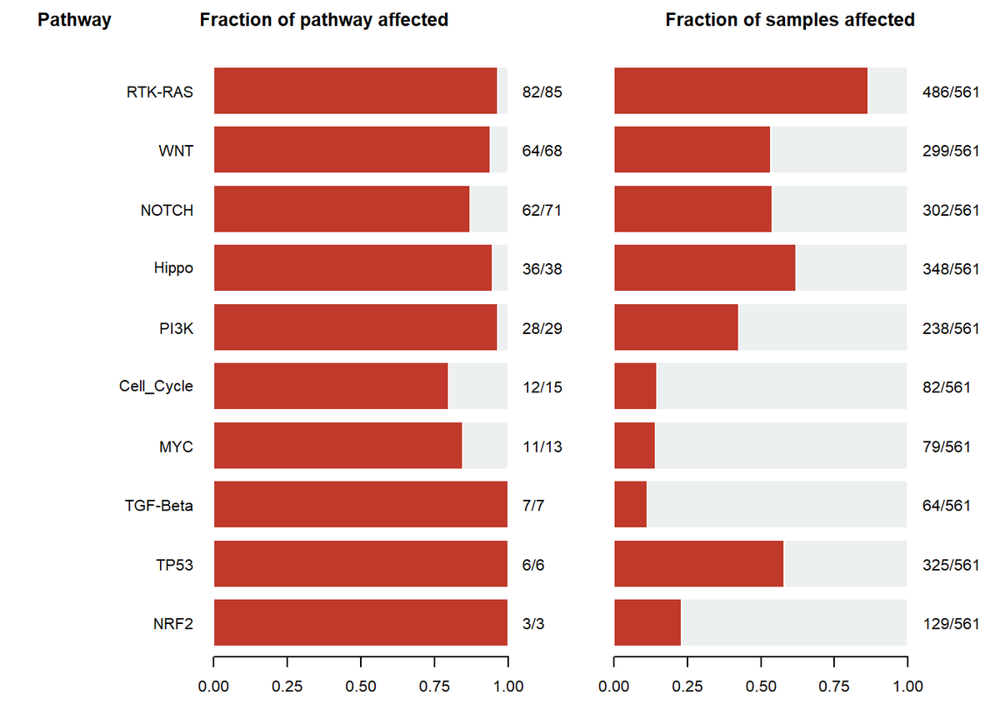
## Pathway N n_affected_genes fraction_affected Mutated_samples
## 1: NRF2 3 3 1.0000000 129
## 2: TP53 6 6 1.0000000 325
## 3: TGF-Beta 7 7 1.0000000 64
## 4: MYC 13 11 0.8461538 79
## 5: Cell_Cycle 15 12 0.8000000 82
## 6: PI3K 29 28 0.9655172 238
## 7: Hippo 38 36 0.9473684 348
## 8: NOTCH 71 62 0.8732394 302
## 9: WNT 68 64 0.9411765 299
## 10: RTK-RAS 85 82 0.9647059 486
## Fraction_mutated_samples
## 1: 0.2299465
## 2: 0.5793226
## 3: 0.1140820
## 4: 0.1408200
## 5: 0.1461676
## 6: 0.4242424
## 7: 0.6203209
## 8: 0.5383244
## 9: 0.5329768
## 10: 0.8663102Kodea erakutsi
PlotOncogenicPathways(maf = luad, pathways = "RTK-RAS")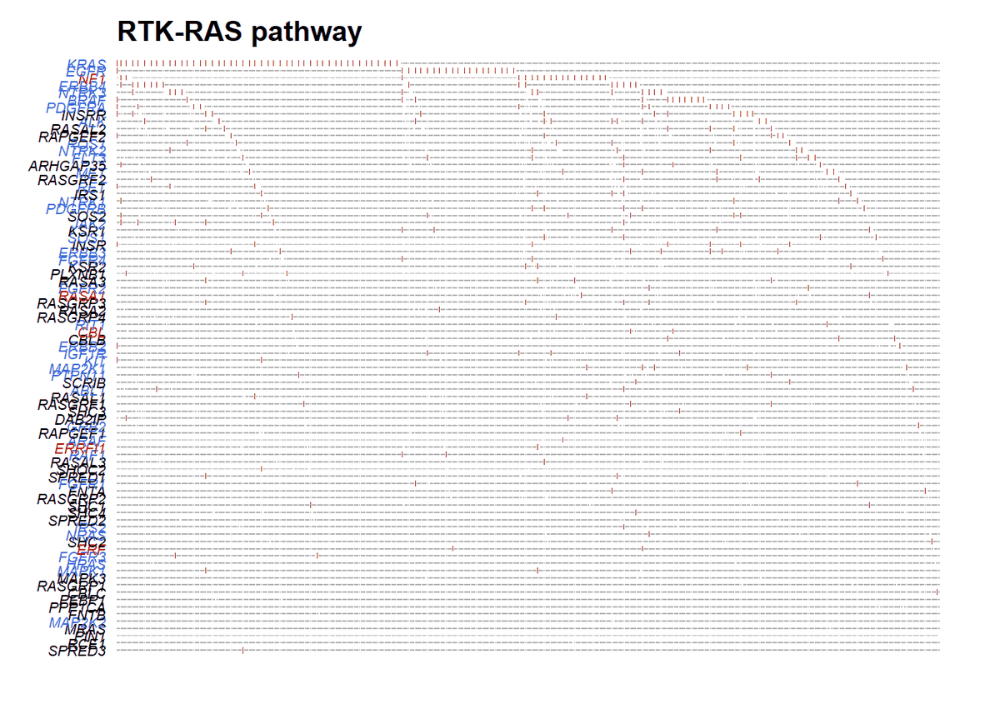
Kodea erakutsi
PlotOncogenicPathways(maf = luad, pathways = "Hippo")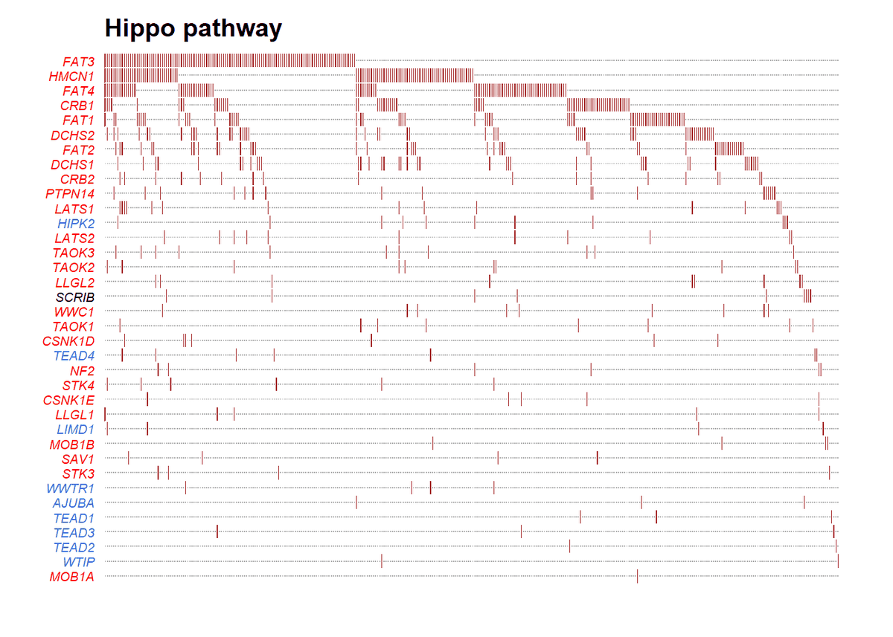
Kodea erakutsi
PlotOncogenicPathways(maf = luad, pathways = "TP53")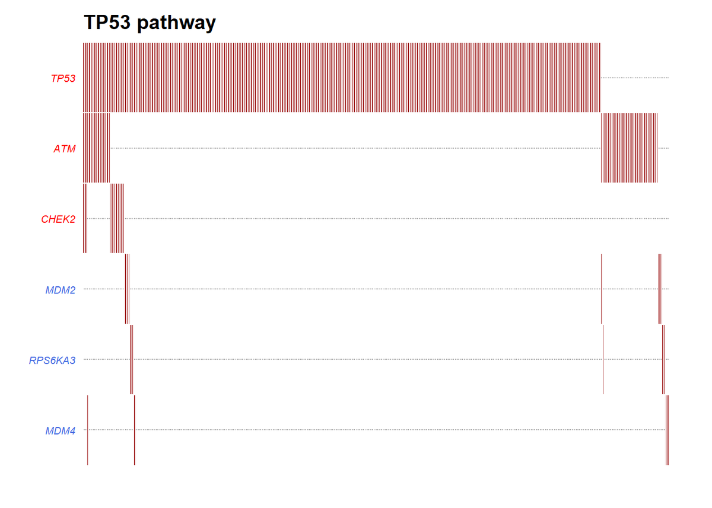
3.6. Drug-Gene Interactions
Kodea erakutsi
#drug gene iteraction
layout(1)
dgi = drugInteractions(maf = luad, fontSize = 0.75)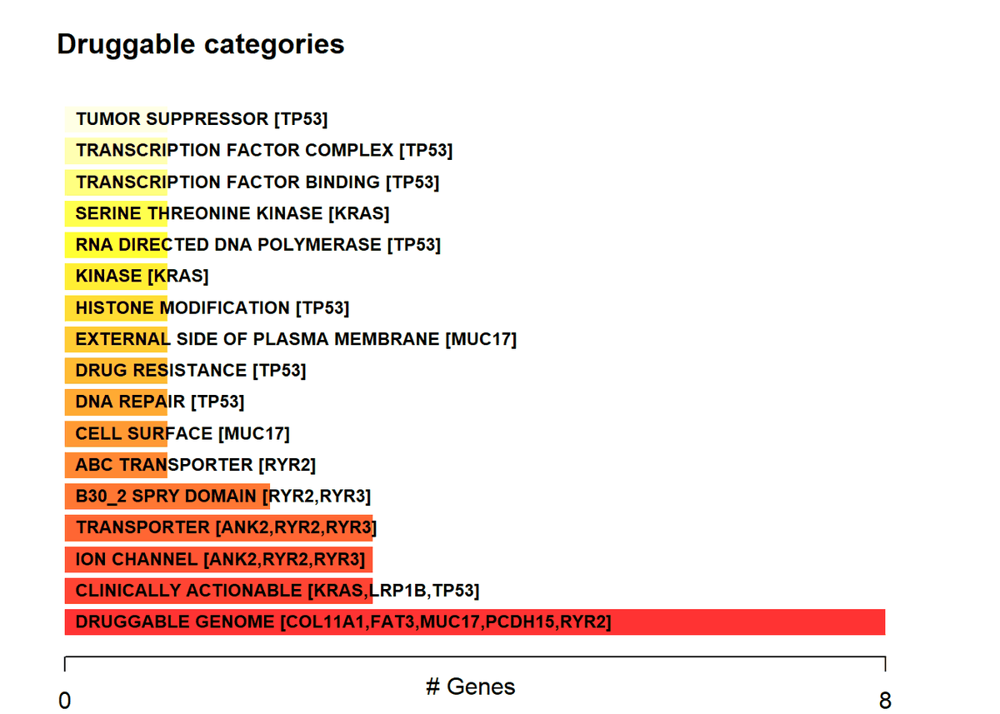
Kodea erakutsi
dnmt3a.dgi = drugInteractions(genes = "TP53", drugs = TRUE)## Number of claimed drugs for given genes:
## Gene N
## 1: TP53 193Kodea erakutsi
#Printing selected columns.
dnmt3a.dgi[,.(Gene, interaction_types, drug_name, drug_claim_name)]## Gene interaction_types drug_name drug_claim_name
## 1: TP53 CTX-1
## 2: TP53 GEMCITABINE Gemcitabine
## 3: TP53 GRANISETRON GRANISETRON
## 4: TP53 EPIRUBICIN epirubicin
## 5: TP53 TOPICAL CORTICOSTEROIDS
## ---
## 189: TP53 CEP-8983
## 190: TP53 PANITUMUMAB Panitumumab
## 191: TP53 STREPTONIGRIN STREPTONIGRIN
## 192: TP53 SELICICLIB Seliciclib
## 193: TP53 PD01662854. Discussion
5. Conclusions
6. Bibliography
[1] https://en.wikipedia.org/wiki/Lung_cancer
[2] Jha, P., Peto, R., Zatonski, W., Boreham, J., Jarvis, M. J., & Lopez, A. D. (2006). Social inequalities in male mortality, and in male mortality from smoking: indirect estimation from national death rates in England and Wales, Poland, and North America. Lancet (London, England), 368(9533), 367–370.
[3] Jakopovic, M., Thomas, A., Balasubramaniam, S., Schrump, D., Giaccone, G., & Bates, S. E. (2013). Targeting the epigenome in lung cancer: expanding approaches to epigenetic therapy. Frontiers in oncology, 3, 261.
[4] Surget, S., Khoury, M. P., & Bourdon, J. C. (2014). Uncovering the role of p53 splice variants in human malignancy: a clinical perspective. OncoTargets and therapy, 7, 57.
[5] Al Hajri, Q., Dash, S., Feng, W. C., Garner, H. R., & Anandakrishnan, R. (2020). Identifying multi-hit carcinogenic gene combinations: Scaling up a weighted set cover algorithm using compressed binary matrix representation on a GPU. Scientific reports, 10(1), 1-18.
[6] Deng, J., Wu, X., Ling, Y., Liu, X., Zheng, X., Ye, W., & Gong, Y. (2020). The prognostic impact of variant allele frequency (VAF) in TP53 mutant patients with MDS: A systematic review and meta‐analysis. European Journal of Haematology, 105(5), 524-539.
[7] https://www.mun.ca/biology/scarr/Transitions_vs_Transversions.html